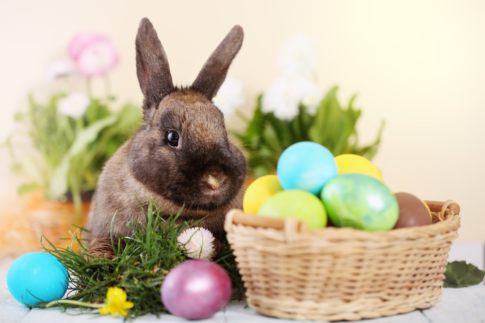

Zajączek wielkanocny
Zajączek wielkanocny jest bardzo ważnym symbolem świąt wielkanocnych. To on przynosi dzieciom prezenty i składa jajka w koszyczku.
Zajączek wielkanocny jest bardzo ważnym symbolem świąt wielkanocnych. To on przynosi dzieciom prezenty i składa jajka w koszyczku.

Tradycyjnie w Polsce w Wielką Sobotę przygotowuje się koszyczek z jedzeniem na śniadanie wielkanocne. W koszyku powinny znaleźć się m.in. chleb, jajka, kiełbasa i sól.
ogólna, zwyczajowa nazwa jaja (zwykle kurzego, ale także gęsiego czy kaczego) zdobionego różnymi technikami.